Chapters:
I addressed a problem plaguing Reddit’s candy communities. I overcame design challenges by attempting uncertain ideas and eliminating doubt.
Figma, Mockflow, Miro
Jun – Aug 2021 (3 Months)
I regularly visit Candy subreddits (like r/candy and r/chocolate). When I do, I witness people asking for help finding their favorite candies again.
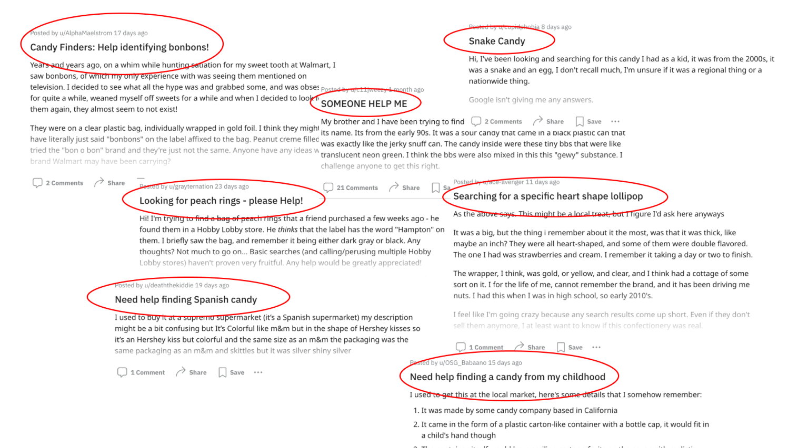Although my involvement was constant, I focused on competitive analysis and UI design influenced by my teammate’s research findings. One of my favorite moments of the project was conducting a few usability testing sessions when my teammate wasn’t present.
I sent surveys to both the r/candy and r/chocolate subreddits to understand the scale of the problem.
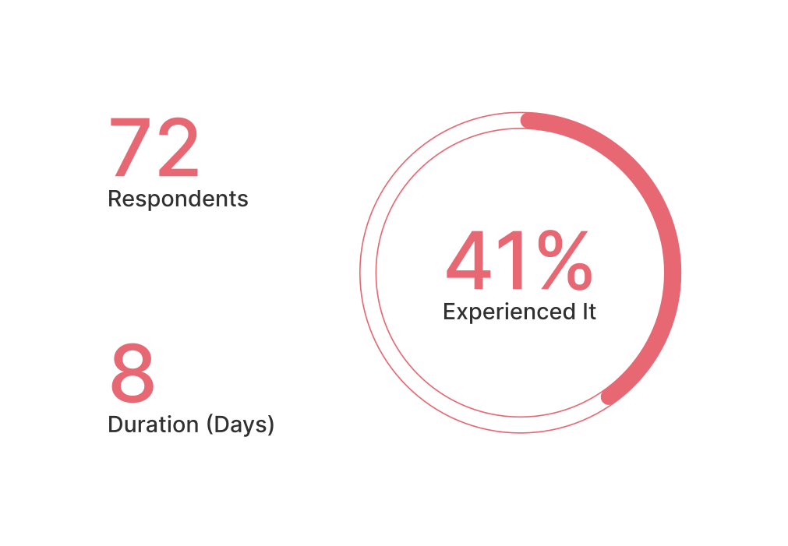All interviews were through messages. Nevertheless, I arrived at the cause of candy forgetfulness, the motive for reuniting with candy, and what people would do after they find the product.
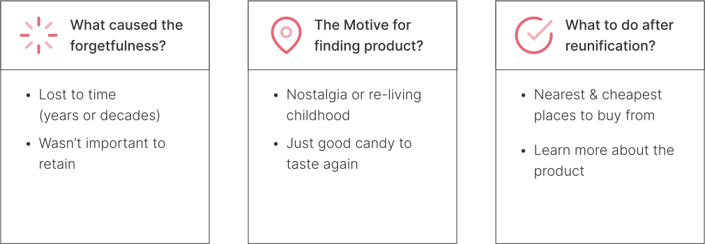I conducted a SWOT analysis on three products my interviewees use. Key findings include having loyal followings facilitated by newsletters and simple website layouts. Unfortunately, these products don’t help people find forgotten products.
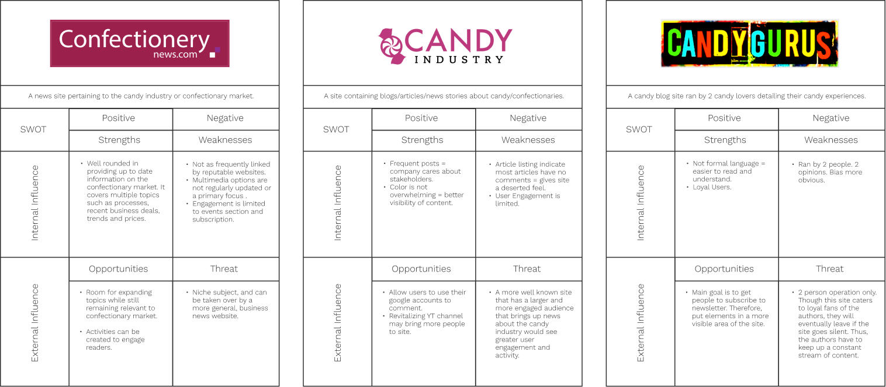My teammate and I brainstormed features based on our research and filtered them through the feasibility and practicality lenses. The most surprising addition was the “news” feature. People liked having easy access to new candy and industry information.
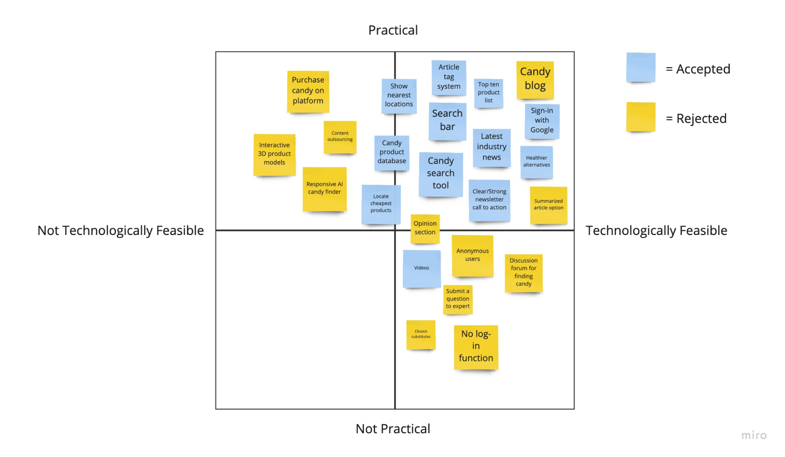In addition to a search that would interpret vague user descriptions, the solution would also give Candy-loving Redditors relevant information through diverse mediums like articles, top-five lists, and videos about their favorite candies and the industry.
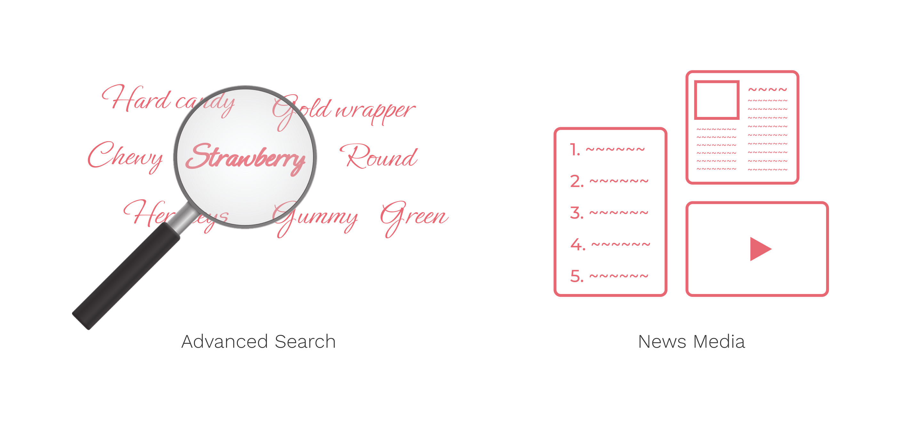Using mockflow for quick idea visualization, I sketched separately from my teammate to avoid group thinking. After sharing our ideas and reaching a consensus, I collaborated on a cohesive wireframe with my teammate.
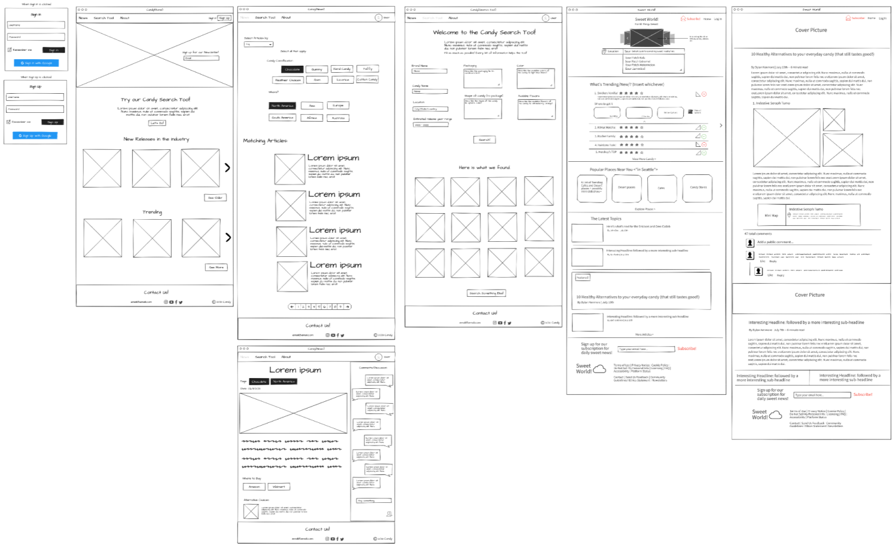 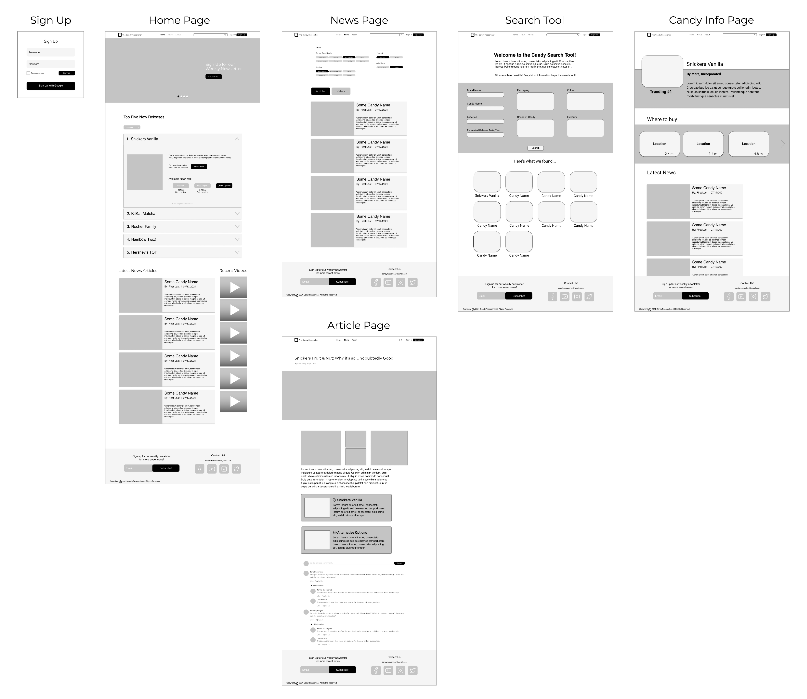They thought we were on the right track and suggested minor changes. However, two comments stood out.
All 5 individuals pointed out the form’s 3-column layout and how bland it is. Frustration was caused by the lack of essential input UI elements like text placeholders.
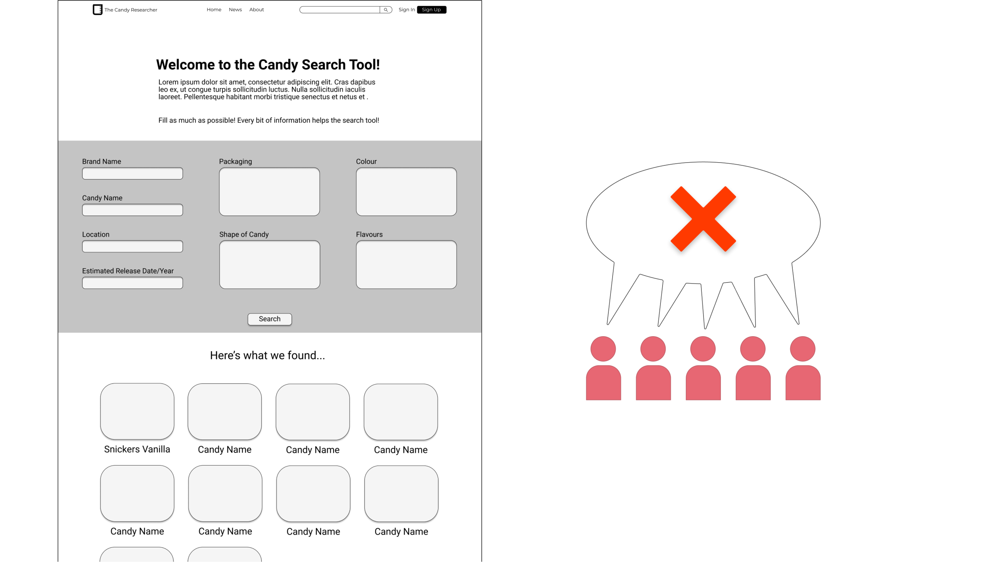4 individuals felt using an accordion for the top five list was wrong because if all dropdowns were closed, it would be a useless block on the screen. Yet, revealing all dropdowns would be overwhelming because of the many words and buttons.
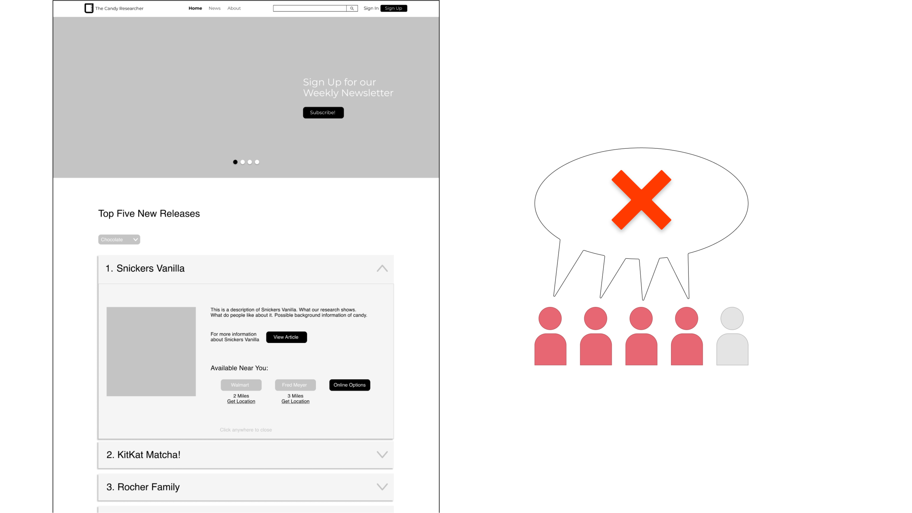After considering the feedback, I began to implement the changes. Redesigning the search page was straightforward. However, the top five list was complicated.
There were too many variables. So, I removed the accordion and simplified the content. The following content needed to go.
I experimented with the UI using the product name, rank, and image.
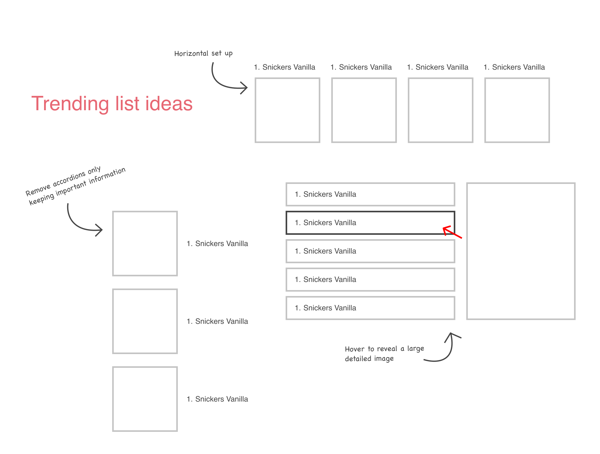After getting stuck on the layout, I wondered whether it was worth having a top-five list in the first place. Yet, after talking to my teammate, I decided to keep it. A top-five list will give the product an up-to-date atmosphere and build authenticity.
I explored products that had a ranking list UI. Eventually, I landed on Billboard.com and their HOT 100 list and drew connections between it and my situation.
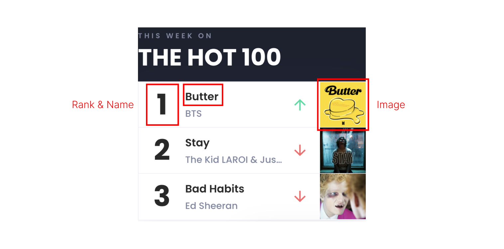I took a note from other candy news sites and used a newsletter CTA in the carousel. Below that is the Billboard-inspired list design. Although I widened the list to give information more breathing room, there was still leftover space. So, I added a blurb that gave credibility to the list.
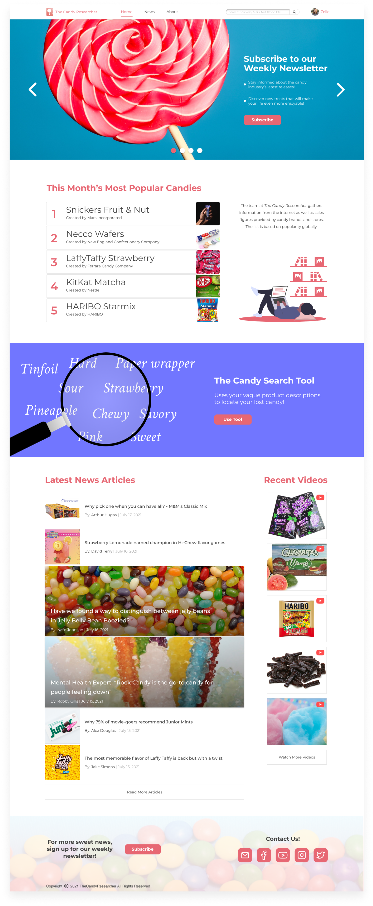If users don’t know the type of candy they are looking for, they can use the filters to explore. If they are looking for a specific candy product, they can use the optional advanced filters to take in bits of information.
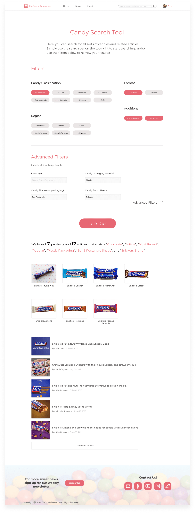As unearthed in the research, people want information about a candy product’s history, the nearest and cheapest places to buy it from, and relevant articles/videos. So, if an individual is interested in a particular product found in areas like the list, search results, or articles, they will be linked to this page.
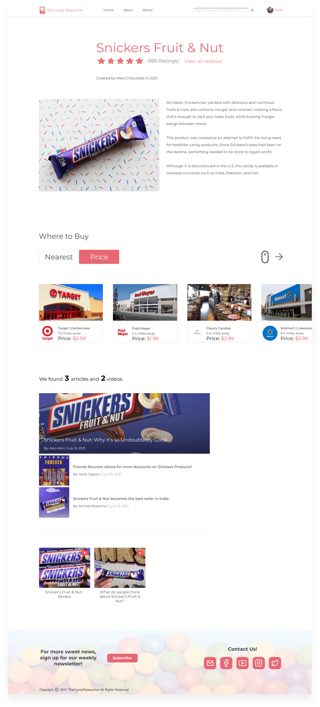Here are two prototype reviews.
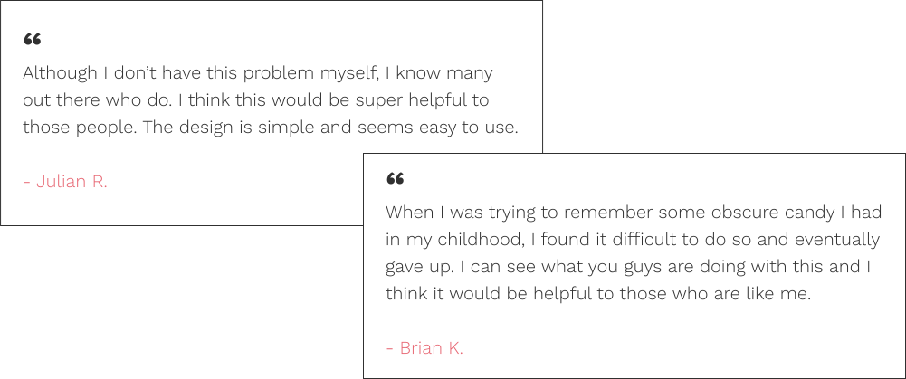Thinking back, embedding images into the list was familiar to me. Yet, I thought it wouldn’t work. In my mind, the visuals appeared too small. I had exhausted all my other ideas and didn’t attempt uncertain ones. In the future, nothing is off the table during my ideation.